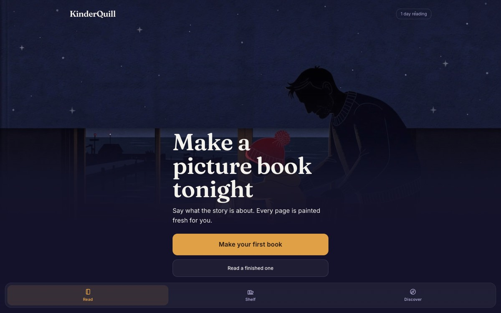

Early 2025: a single-page app that turns a photo into a Studio Ghibli–style celebration scene through the Venice image API. It was a toy. Then the toys kept coming: celebrations → prompt tools → generators → agents → storybooks. Eighteen months later, the ledger looks like this page.
open the original app ↗Personalized children's storybooks generated in one tap: age-tuned stories, Studio Ghibli-style illustrations, and narrated audio — all Venice. Built around the bedtime ritual, not the demo: daily story prompts, reading streaks, resume-where-you-left-off, and a night-light reading scene.
"The home screen is a STAGE, not a landing page. A parent opening this at bedtime should see the book they are in the middle of."

Every live deployment, screenshotted this week. Click any card to open the real app. Screenshots render lazy and reveal on scroll.
Before Railway, everything shipped to Netlify — the first eighteen experiments that proved the method. Medical Affairs tools, BYOK studios, podcastifiers, trial matchers, and family microsites. Every card opens the live site.